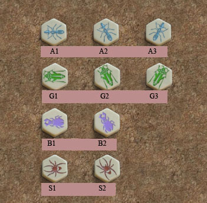
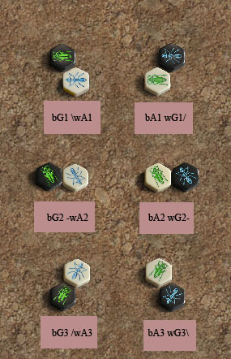
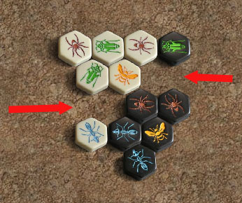
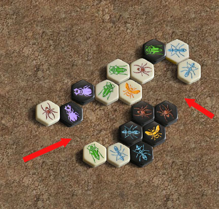
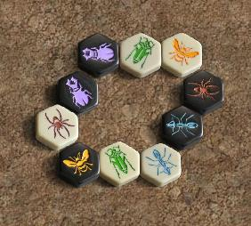

|  | Обозначения фигур
|
|  |
Обозначения ходов
|
|  |
КалиткаКалитка образуется при
разделении двух плиток на расстояние равное одной стороне
плитки, её легко распознать по небольшому зазору между двумя
вершинами разных плиток. Отверстие калитки такое маленькое,
что в него не может пройти ни одна фигура, включая жуков.
Два жука сверху улья также могут образовать калитку, которая
не позволит другим жукам двигаться через неё ввверх или вниз.
Конечно, не будучи способен пройти через калитку напрямую,
жук может идти по фигурам образующим её.
Калитка никак не ограничивает передвижения кузнечика и божьей коровки. Остальные наземные фигуры проходить или проскальзывать сквозь калитку не могут. Калитки сверху улья, сделанные жуками или комарами, особенно коварны. Жуки и комары, притворившиеся жуками, не могут объединить или разъединить улей через калитку. Мокрицы не могут тянуть или толкать сквозь калитку другие фигуры. |
|  |
ДверьДверь получается при
разделении двух плиток на расстояние одной ширине плитки.
Любая фигура может пройти через дверь, но пауки возле двери
получают дополнительную мобильность, поскольку пройдя в
дверь они могут продолжить движение в трёх направлениях.
|
|  |
КольцоЗамкнутые в круг фигуры
образуют кольцо. Создание кольца опасно, потому
что все фигуры становятся мобильными, но ваш противник
получает преимущество следующего хода.
|
|
|
Site Map |
Go to BoardSpace.net home page |